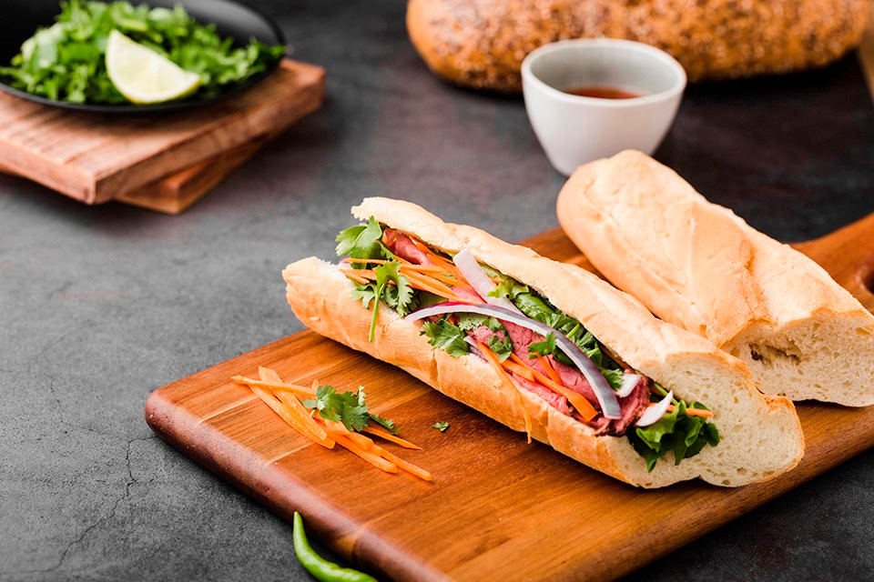

Bánh mì Việt Nam, một biểu tượng của ẩm thực đường phố Việt Nam, là một loại bánh mì được làm từ bột mì và thường được kết hợp với các nguyên liệu như thịt nướng, pate, chả lụa, rau sống, dưa chuột và sốt chua ngọt.
>Bánh mì Việt Nam có nguồn gốc từ bánh mì của người Pháp, được giới thiệu vào thế kỷ 19 khi Việt Nam còn là thuộc địa Pháp. Tuy nhiên, bánh mì Việt Nam đã phát triển và trở thành một phần không thể thiếu của ẩm thực đường phố Việt Nam, với nhiều biến thể độc đáo và phong phú.
bởi TITV